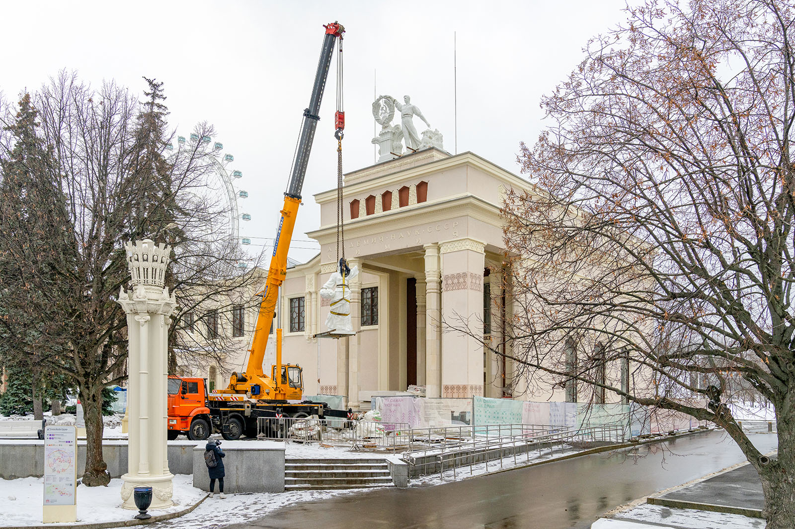
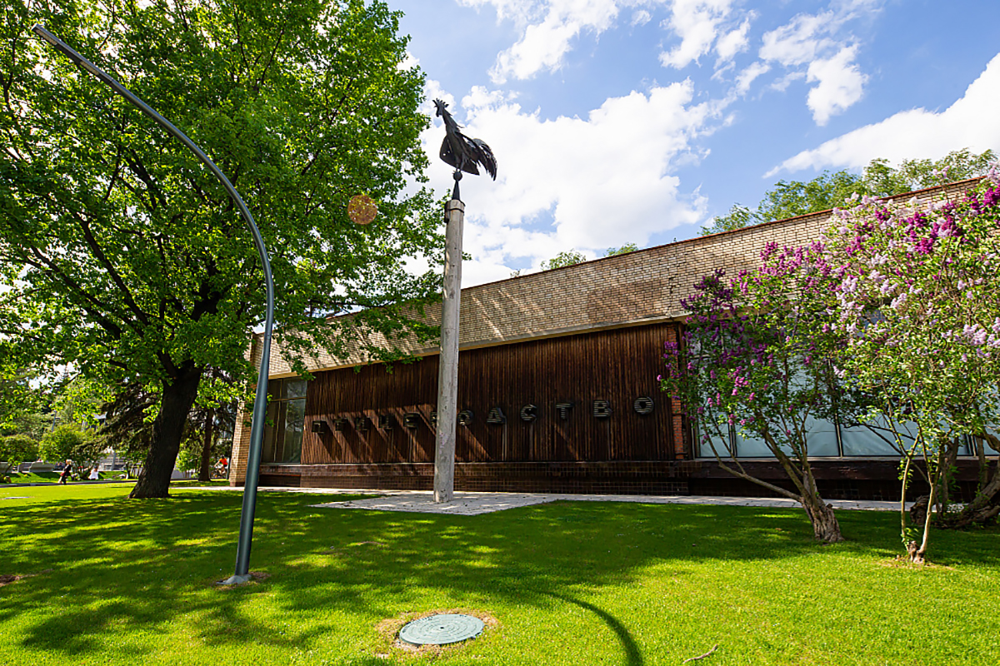
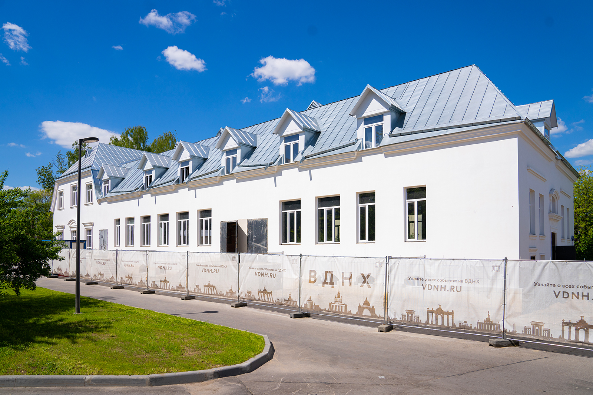
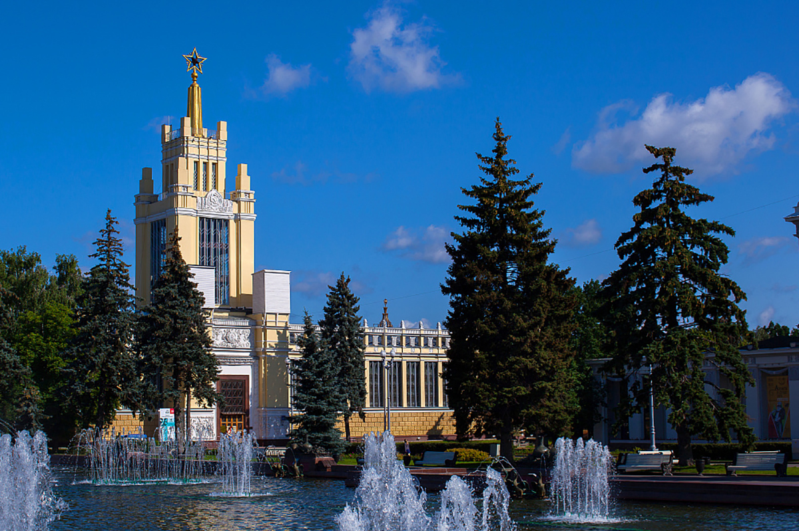
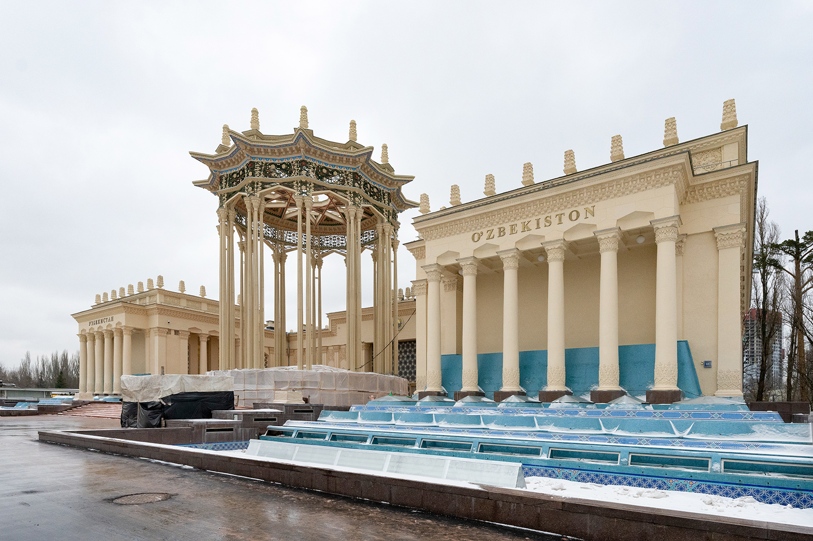
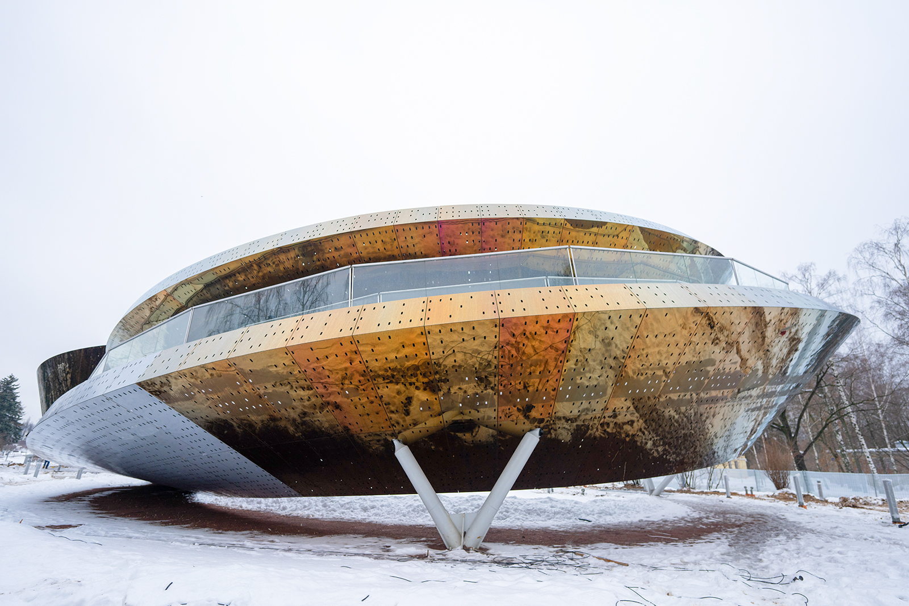

VDNKh to restore or erect 15 facilities in 2023
VDNKh is one of the biggest restoration sites in Moscow. In 2022, it restored or erected eight facilities under its revival program, with 15 facilities to be completed this year.
Launched in 2014, the revival program primarily aims at preserving national cultural heritage sites and enabling the growth of VDNKh with the vision of making the preserved historical pavilions look again like they originally were in 1954; 26 out of 49 cultural heritage sites have been restored since 2014.
VDNKh’s focal point
Pavilion No. 1 known as Central (Main), to host an exposition of the State Tretyakov Gallery, has been restored since 2014 when they started the VDNKh revival program, for it to eventually look like it was back in 1954.
The restoration architects restored the façades in 2018 and returned the medallions featuring the coat of arms of the Karelian-Finnish SSR to where they had been until 1956. They also rehabbed the halls known as Machine and Tractor Station, Revolution, Collective Farms, Soviet Farms, Victory, Stalin Constitution, and Science
and put the spire and golden star back onto the pavilion the way they were. Four sculptures of a worker together with a collective farm woman originally created by Georgy Motovilov were also renovated. The total area of repaired or restored façades and external decorations is more than 15,000 square meters.
Pavilion No. 6 Chemistry (previously Lithuanian SSR pavilion)
The restoration of Pavilion No. 6 began in 2018. After almost 60 years, the restorers recreated according to surviving archival drawings and photographs and put back the lost sculpture of Collective Farm Man and Collective Farm Woman with the coat of arms of the Lithuanian SSR, which topped the building from 1954 to 1964.
They also completed the façade renovation and now workers are installing engineering equipment and networks and will do fine finishing, while experts are to recreate the lost stucco details, stained glass windows of a side façade, and chandeliers in the entrance hall.
After the restoration, the pavilion will host an Abkhaz Trade Show Center and expositions dedicated to the history, culture and achievements of Abkhazia.

Pavilion No. 15 Radio Electronics and Communications (previously known as the Volga Region pavilion)
The architects started restoring this cultural heritage site of federal significance in 2019. Now they are restoring and redoing the front door, granite and limestone facing of the façade wall base, terrazzo flooring on the principal façade stylobate and inside the building, in addition to the cascade fountain nozzles.
After the repair and restoration, the pavilion will accommodate the Olympic Museum of Russia.
Pavilion No. 37 Poultry
Builders have overhauled it since 2021; they have already installed a steel entresol, a ventilated façade, regular and stained-glass windows, and roofing, insulated and waterproofed the foundation and laid external electricity, heating, water supply and sewage networks, with internal engineering systems, such as ventilation, heating, water supply, power supply, plus interior decor (tiles, plaster and painting) to also be done soon.
The pavilion will accommodate a Human Enhancement Center, including a cyberware athletics ground (cyberware athletics involves people with artificial body parts or those using electric wheelchairs who compete in managing their respective devices), training/rehab areas for persons with disabilities, and an innovation incubator. It will also host conferences, master classes, exhibitions, etc.

Pavilion No. 50 Dairy Industry
Overhaul in the pavilion has been going on since July 2020. They are doing interior design and finishing and connect engineering systems and equipment.
The pavilion will host the project called Milkoteka. Diary Museum to run thematic master classes, seminars, lectures and conferences and accommodate a food court and a souvenir shop, in addition to a photo booth, a children's room, and a thematic cafe.

Pavilion No. 51 Meat Industry (former Glavmyaso)
The restoration project started in 2021 to restore terrazite plaster, with the color and texture matching the original as much as possible. The restoration architects have also restored the metal stained glass windows of the principal façade, fixed and cleaned up the metal decorations. The front entrance doorset is being renovated to look as it once was with redone brass bay leaves, bands and antique flower pots.
Now they are dealing with the sculpture The Fighter and a Bull, which is as high as the principal façade. On top to that, they use archival documents to restore two bull sculptures to be installed in front of the principal façade of the pavilion, with the concrete beasts having original size, that is almost three meters in height and four meters in length.
Pavilion No. 59 Grain (previously known as Moscow Region pavilion)
Work in this pavilion has been underway since 2020; experts have restored the 3.5-meter five-pointed ruby star decorating the gilded spire and are now making the pavilion look like it originally was back in 1954. One of its key highlights is a picturesque open-sky ceiling, and the architects are choosing among restoration techniques to get the original back again. They are also renovating the whetstone marble in all halls and the interior stained glass to further proceed to the chandeliers, lost decorations, and surviving ornamentation of the interior.
After completion, the pavilion will accommodate an exposition of the Polytechnic Museum.

Pavilion No. 66 Soviet Culture (former Uzbek SSR pavilion)
Pavilion No. 66 Soviet Culture has been renovated since 2019 to get it back as it was in 1954. Its focal element is a rotunda; the restorers have already redone its lost decorations and found some decoration remnants at the top. They did a research and completely recreated it from historical photographs and following a full-scale survey.
In 2019, the pavilion was arranged to host a cultural and trade center of Uzbekistan at VDNKh under the intergovernmental agreement between Russia and the Republic of Uzbekistan; it will accommodate an arts café, Uzbek stores, and a museum exposition of traditional dress and artifacts.

Orion Park
In 2016, VDNKh started building the Park of the Future, which was renamed the Orion Park in 2021. Located in the southern part of VDNKh, it is the first theme park ever created in Moscow to host regular tours, excursions, lectures, and festivals. Each of the attractions will resemble a high-tech mechanism from the far-off future.
In 2018, they inaugurated the park’s first facility — Pavilion No. 9 called the Fairy Tale Theater, installed internal engineering systems and some other things for the outdoor attractions.
Moreover, VDNKh will have three thematic 8-meter retrofuturistic arches of the Orion Park, to be made of mirror polished stainless steel with decorative/functional lighting and environmental stress protection.
Möbius Band
Named after German astronomer, mathematics and mechanics August Ferdinand Möbius, it is a continuous walking route twisted to make an eight, or an infinity symbol, and visitors are to walk along two routes that are either parallel or intertwined.
The attraction is already finished, with the installation completed in the fall of 2022. It is located in the Five Senses Garden to be opened this year; a range of plants specially selected for each of the sites will stimulate one the five senses, such as sight, hearing, smell, touch, and taste, with concreting and planting to start after the last spring frost date.

Other renovations
Overhaul is also carried out in the VDNKh archive and library; building 513 will accommodate a Greek restaurant for guests to taste the brand chef’s food, while building 312 is to host an exhibition of the State Biology Museum named after K.A. Timiryazev . After restoration, Pavilion No. 61 Central Union will display an exposition of the Leo Tolstoy State Museum, called War and Peace Entertainment Park. This year, they also plan to open Pavilion No. 19 Atom, to take in Russia’s biggest and most advanced exposition dedicated to nuclear energy.